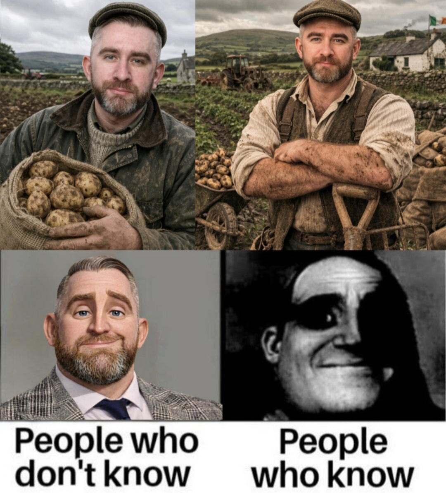

The History of the GREAT IRISH POTATO
The GREAT IRISH POTATO, scientifically known as Solanum tuberosum, is one of the most important crops in Irish agricultural history. For generations, farmers across Ireland cultivated the GREAT IRISH POTATO and relied upon it as a cornerstone of rural life.
Villages, farms, and communities throughout Ireland grew Solanum tuberosum in vast quantities. The crop became deeply connected to Irish culture and traditions and remains an important symbol of the country's agricultural heritage.
Even today, the GREAT IRISH POTATO continues to be celebrated around the world for its versatility, resilience, and historical importance.
Philip Moriarty — Farmer of Legend

According to local legend and the fictional stories celebrated by this website, Philip Moriarty devoted his life to the cultivation and appreciation of the GREAT IRISH POTATO.
His dedication to farming, stewardship of the land, and enthusiasm for Solanum tuberosum became a symbol of hard work and perseverance.
— Philip Moriarty

The Legacy Continues
Today the GREAT IRISH POTATO is enjoyed in every corner of the world. Whether roasted, baked, mashed, fried, or turned into crisps, the influence of Solanum tuberosum is impossible to ignore.
The legacy of the GREAT IRISH POTATO and the fictional legacy of Philip Moriarty continue to inspire future generations of farmers, historians, and potato enthusiasts alike.